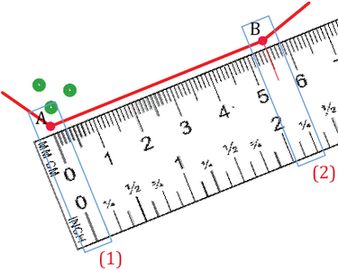

(a) Chora mstari ulionyooka unaounganisha vitu viwili, kwa mfano, kituo A na kituo B kama inavyowasilishwa katika Kielelezo namba 9.
A
B
(b) Laza rula sambamba na mstari ulionyooka, hakikisha alama ya sifuri (0) kwenye rula inashabihiana na kituo A (1), na weka alama kwenye rula katika kituo B kama ilivyowasilishwa kwa alama nyekundu (2) katika Kielelezo namba10.

A
B
(1)
(2)
(c) Umbali katika ramani uliopimwa kwa rula kati ya kituo A hadi B unaweza kubadilishwa kuwa umbali halisi katika ardhi kwa kutumia skeli ya mstari au skeli ya uwakilishi wa sehemu (uwiano) kwa kufuata hatua zifuatazo.
- Laza rula kwenye skeli ya mstari ambapo sifuri (0) ya kwenye rula iwe sambamba na sifuri (0) ya kwenye skeli ya mstari, na alama nyekundu iwe upande wa kulia wa skeli ya mstari;